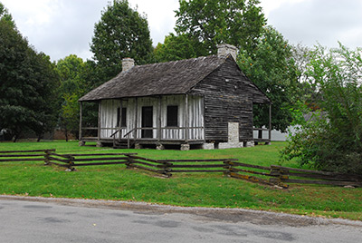

This small village, nestled into the south side of the large levees in this area, was settled in about 1750 by families from neighboring Cahokia. Prairie du Pont—meaning “bridge prairie”"—received its name from the modest wooden bridge that gave villagers access to the fertile prairies lying south of the small creek of the same name. Father Mercier of the Cahokian French Trappists, in a 1743 letter to Louisiana Governor General Vaudreuil, writes, ”We have built a bridge of timbers over a little river at least half a league from here for easy communication between the two prairies,” describing the bridge conveying French farmers onto the rich soil of what was then part of the Cahokia Commons, purchased from the Tamaroa tribe who were living in the vicinity at the time. In an effort by farmers to locate closer to their fields, a village eventually built up on the south side of the creek on open prairie extending south and east to the bluffs. Roughly following the path of what is today known as Water Street, the Chemin du Roi passed through the village and over the bridge on its path from Kaskaskia to Cahokia. Here too was constructed the first water mill in this part of the country. One of the earliest houses in the village is in fact still standing on village lot 58. Thought to be built around 1790 by Revolutionary War veteran Pierre Martin in the poteaux-sur-sol method, the house is flanked by a large red cedar tree which is thought to pre-date it. Prairie du Pont was administratively attached to Cahokia from its founding until 1871, at which point it was separated from the township and subsequently incorporated as a village in 1874. Today, just as Prairie du Pont is a reminder of the long history of French inhabitation in the American Bottom, it is also a reminder of the ways that history is abstracted and transformed through use and time. For it is in fact this lovingly named creek and village, Prairie du Pont, the Village at the Meadow Bridge, that has been truncated to the Dupo name used today.